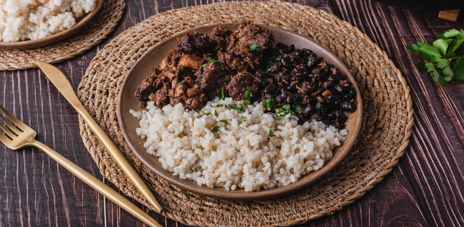

Feijoada
Plato típico de Brasil
- Duración: 1 hora 30 minutos.

Tacos
Plato típico de México
- Duración: 20 minutos.

Ajiaco
Plato típico de Colombia
- Duración: 4 horas

Asado argentino
Plato típico de Argentina
- Duración: 1 hora 35 minutos.

Ceviche
Plato típico de Perú
- Duración: 1 hora.

Pabellón
Plato típico de Venezuela
- Duración: 2 horas.